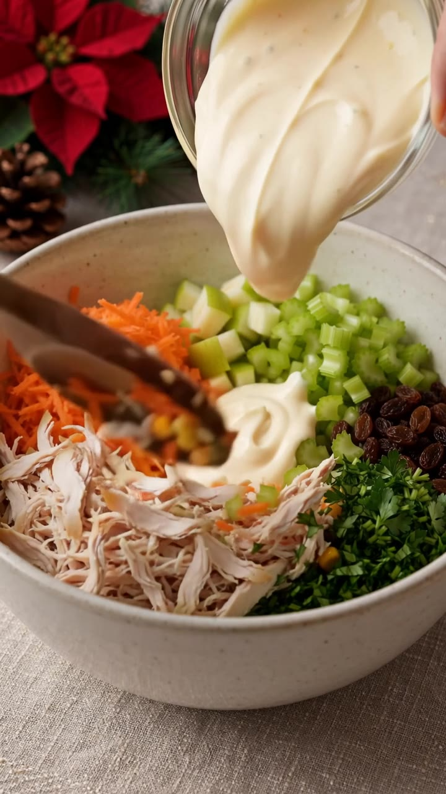

Salpicão de frango cremoso para a ceia de Natal: frango desfiado, legumes, maçã e uva-passa num molho de maionese com creme de leite, finalizado com batata palha.
Não existe ceia de Natal sem salpicão! Esta versão é cremosa sem ficar pesada: o molho leva maionese e creme de leite, a maçã verde dá um frescor delicioso e a uva-passa é opcional, porque cada família tem o seu time. Uma vantagem: ele pode ser preparado na véspera, o que deixa o dia da ceia muito mais tranquilo. Só não esqueça de colocar a batata palha na hora de servir.
Modo de preparo
Em uma tigela grande, misture o frango desfiado com a cenoura, o milho, a maçã, o salsão, a uva-passa e o cheiro-verde.
À parte, misture a maionese, o creme de leite, a mostarda e o suco de limão. Tempere com sal e pimenta.
Junte o molho ao frango e misture bem.
Cubra e leve à geladeira por pelo menos 1 hora.
Na hora de servir, cubra com batata palha.
Veja em vídeoPasso a passo em fotos
1. Ingredientes separados

2. Junte o molho e misture
Dica:Coloque a batata palha só na hora de servir: se ficar no molho, ela amolece. Dá para preparar o salpicão na véspera.
Fez esta receita?
Conta pra gente como ficou! Deixe um comentário, mande uma foto do seu resultado
ou marque @melhores.receitas126 no seu post.
Conta pra gente como ficou! Deixe um comentário, mande uma foto do seu resultado ou marque @melhores.receitas126 no seu post.